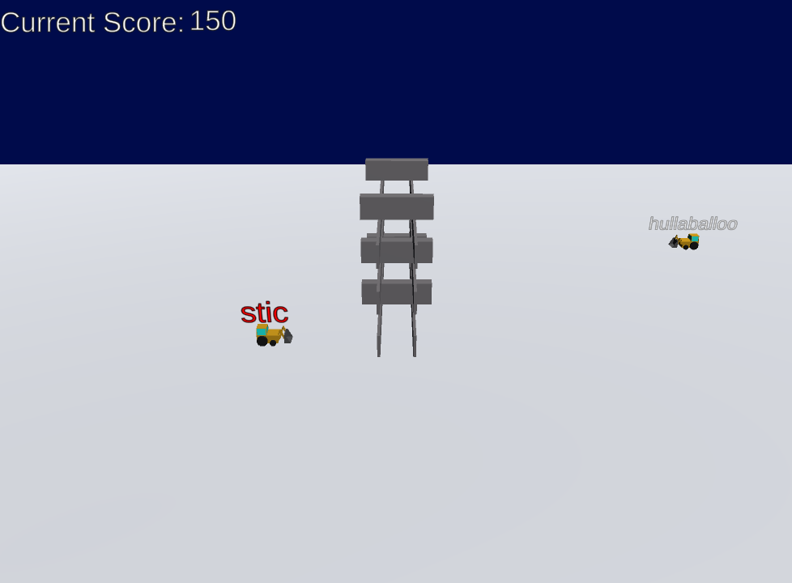
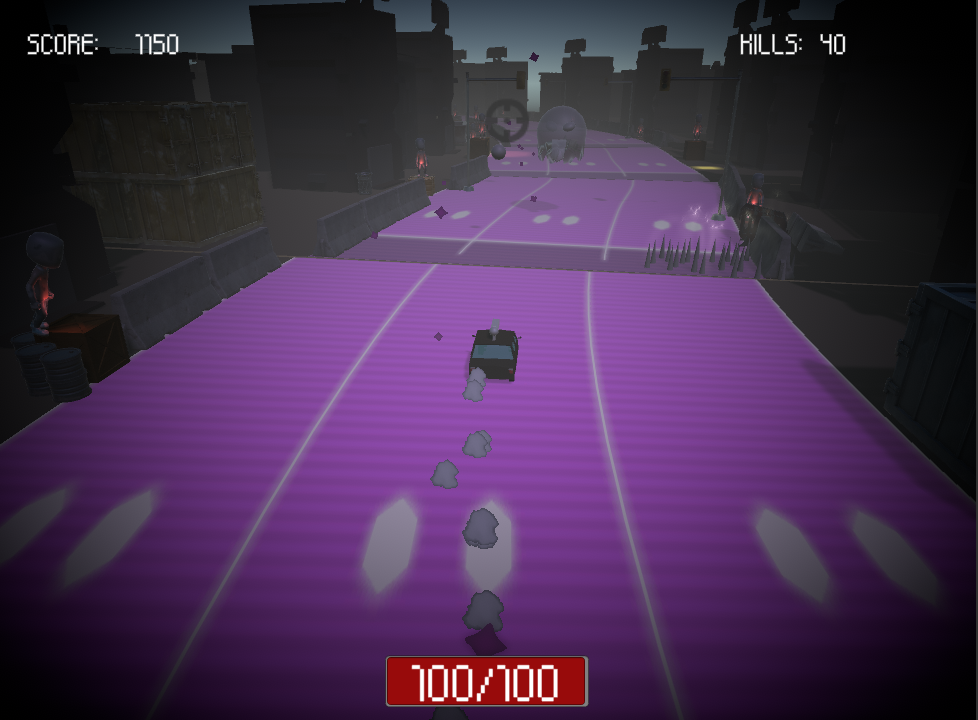
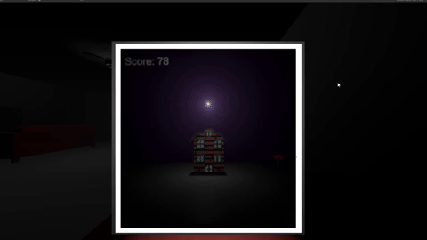

Welcome!
Below you will find a few things about myself as well as some projects I am working on
About me
My name is Spencer Ras, I have a bachelors of science in Computer Science from the University of Windsor. I've been playing games all my life, from World of Warcraft to Call of Duty, I'm familiar with a wide variety of genres. My favorite games have to be the Kingdom Hearts series. They showed me how a game can deliver a full experience not only through its gameplay but through the story and characters. The way I felt when playing that series is what inspired me to pursue a career in game development. I want to create games that gives the players what they're seeking.

Projects
Here are some of my projects, feel free to test them out!
- Born in Flames
-
A small game I made for the Brakey's game jam where the theme was "An End is a New Beginning."
You play as a dragon destroying a village that the villagers keep rebuilding in front of your home,
the volcano. I had a week to develop this game. I did not make any of the assets but I developed
everything else solo.

- Unstableable
- My Ludum Dare submission where the theme was Unstable. I had 24 hours to develope this game, I made every asset myself. This is a typing game where the player needs to hack in to bulldozers trying to knock over their tower and shut them down. 
- Zombie Driver
- You play as a survivor in a zombie apocalypse driving through a decrepit city. Dodge and shoot at zombies throwing bricks to try to stop you as well as a ghastly entity. I made most the assets myself excluding the zombie's model. 
Here are some projects I'm currently working on.
- What was That?
- You're laying in bed one night playing a typing game on your phone but you see something out of the corner of your eye... Keep monsters away from your house and away from yourself in this horror typing game. All the assets except for the props (couch, tv, computer etc.) were made by me. 
- Sci-Fi Tower Defence
-
Play as an alien defending your ship and crew from incoming enemies. Build turrets and
finish enemies off with your blaster. I used two different asset packs, one for the models and one for the UI.

- Pro Shooter Underground
-
A movement focused multiplayer fps where the amount of kills you get doesn't matter
but how cool they look does. This project uses Unity's Netcode for GameObjects as well as Unity Relay.

Contact Me
Thank you for your time!
If you're interested in working with me then please feel free to contact me via email or LinkedIn. I am open to work at the moment and would love to speak to you about any opportunities you may have.